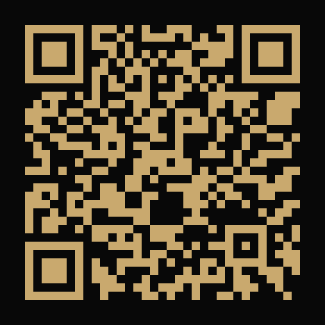

FRENTE — marcador AR · imprimir en negro
BRAVE
LEON
CREATIVE STUDIO
AXEL G. VILLAGOMEZ
Diseñador Gráfico · Motion · XR
EMAIL
axel@braveleon.studio
TEL
+52 444 000 0000
WEB
braveleon.studio
GITHUB
github.com/axgv.
REVERSO — QR + instrucciones

App AR
BRAVE LEON
1
Abre
Google Chrome
en tu celular.
2
Escanea el QR o escribe la URL de abajo.
3
Permite acceso a la cámara cuando el sitio lo pida.
4
Apunta la cámara al
frente de la tarjeta
— el video se superpone sobre ella.
axelgvillagomez.github.io/brave-leon
Imprimir en bond · sin márgenes · cortar a 9 × 5 cm